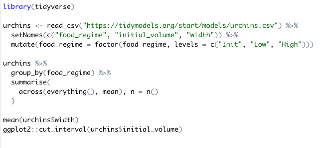

Monokai

Github

And typically this is highlight.js github theme:
library(tidyverse)
urchins <- read_csv("https://tidymodels.org/start/models/urchins.csv") %>%
setNames(c("food_regime", "initial_volume", "width")) %>%
mutate(food_regime = factor(food_regime, levels = c("Init", "Low", "High")))
urchins %>%
group_by(food_regime) %>%
summarise(
across(everything(), mean), n = n()
)
mean(urchins$width)
ggplot2::cut_interval(urchins$initial_volume)RStudio

Unique highlighting
There is also the highlight R package, which does semantic highlighting, where words have unique coloring depending on the context.
library(tidyverse) urchins <- read_csv("https://tidymodels.org/start/models/urchins.csv") %>% setNames(c("food_regime", "initial_volume", "width")) %>% mutate(food_regime = factor(food_regime, levels = c("Init", "Low", "High"))) urchins %>% group_by(food_regime) %>% summarise( across(everything(), mean), n = n() ) mean(urchins$width) ggplot2::cut_interval(urchins$initial_volume)
pandoc themes. They are conclusively covered here, so I won’t provide a full array: https://www.garrickadenbuie.com/blog/pandoc-syntax-highlighting-examples/
Themes and Parsing
Client-side and server-side.
Commonalities
Save for the unique semantic highlight, there we can find commonalities along two dimensions: themes and syntax.
Themes are primarily designed around colors, but even then there isn’t a lot of consistency between implementations.
And then there are the parsing rules. These rules decide what token gets highlighted.